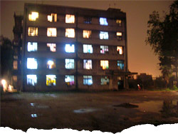

“It was only a 10-minute bike ride from city centre, but 10 minutes in the wrong direction. ”
My German friend and I were trying to think of a place we could ride to on our bikes. A place in Shanghai centre yet hidden from its relentless fury, a place to sit down without anyone bugging us, a place where we could open a bottle of wine, smoke a funky cigarette and relax.
I knew of this empty field down by the river. I’d seen it from the school where I taught on Thursdays. It was only a 10-minute bike ride from city centre, but 10 minutes in the wrong direction. Down there, everyone is poor. Road surfaces are coated with years of cooking oil. Fans extract the scents of ginger, soy sauce and chilli – odours strong enough to choke – from numerous kitchens into the street. The rumble of shuffled mahjong[1] blocks echo out from behind closed doors.
When we arrived, I noticed that something was out of place. Lined up along the road were a series of cars – cars far too expensive to belong in this neighbourhood. The bustling street was, perhaps wisely, not showing any concern to these visitors. As we walked into the field, we saw a young Chinese guy hanging by the gate. He was mostly minding his own business, but he had a two-way radio in his hand.
As we got further in, we saw two or three small groups of Chinese people walking towards the back of the school. Seeking seclusion, we went the other way, towards the river. At the other end of the field, however, was another guy with a radio. I felt like we were trespassing. The chances of this being a place to relax were diminishing proportionally with my will to remain. We turned and started to walk back out.
Heading towards our bikes, I saw through the trees a small hut, thrown together from broken pieces of wood and metal strips. Light seeped through its cracks. It was positioned directly behind the school, completely out of the line of sight from the field entrance. A few people were gathered outside. We walked closer and, upon approach, I asked what they were doing. “Playing Dou Di Zhu[2]”, replied a guy standing around, seemingly waiting his turn.
My friend took my arm. “This isn’t right, we should go.”
“Can I play?” I asked. In recent months, I’d invested whole weekends perfecting my skill at Dou Di Zhu and was interested to hone my talent in the field. True to form, the guy asked if I was betting.
“I only have 100 RMB,” I said.
Upon my reply, his expression changed, going from curiosity in us laowai to something akin to fear.
“You’ve got to leave,” he urged. “You must go”.
We left.
That was a Wednesday night. The next day, from school, I looked out onto the field. The hut was gone.
I wondered what exactly I nearly saw. Why go to such trouble to hide a game of cards? Who was it that the radio sentries were positioned to detect? Inside the hut they were gambling, but what were the stakes?
referenced works
- A four-player game of Chinese origin, mahjong is played with domino-like tiles that are drawn and discarded until one person achieves a winning hand. Though one myth claims that Confucius developed the game around 500 BC, today, it is widely agreed that the game was created in the 19th century. Disputes still exist, however, as to the identity of its creator. Mahjong was banned in China in 1949, when the new Communist government outlawed all gambling activities, as they were viewed as capitalist pastimes. The game was revived after the Cultural Revolution ended and, in the present day, enjoys widespread popularity in the country. ‘Mahjong’ roughly translates to ‘chattering sparrow’, which refers to the sound of the tiles as they are shuffled against one another. ↩
- ’Dou Di Zhu’ (DDZ) is a popular card game in China. The name – which translates to ‘Fight the Landlord’ – originates from the Cultural Revolution era, when landlords were considered one of the ‘Five Black Categories’ of people (along with rich farmers, counter-revolutionaries, rightists, and criminals). DDZ has been likened to Big Two, and knowledge of poker hands can help one’s game. The game’s popularity in the Middle Kingdom has accelerated since its debut online – it’s the Eastern version of Texas Hold’em. One research firm pegged the number of ‘loyal online DDZ fans’ at 18 million in 2005 and one online gaming platform claims that, in 2008, there are roughly 1.5 million users playing its DDZ game on the internet. ↩
- ‘Laowai’ is an informal expression for foreigner in Mandarin Chinese. Literally, it means ‘old outsider’. Though it is widely used, the word is slightly tinged with pejorative connotations – not unlike ‘gaijin’ in Japanese or ‘gringo’ for Americans in Spanish. In recent years, increasing sensitivity surrounding the term has prompted some local governments to launch campaigns to educate the Chinese public about the usage of the word. ↩
location information
- Name: the empty field behind the middle school just south of Zhongshan Nan Er Lu, across from Damuqiao Lu.
- Address: Zhongshan Nan Er Lu, near Damuqiao Lu
- Time of story: Late NIght
- Latitude: 31.197532
- Longitude: 121.468663
- Map: Google Maps
014 “The pages are half-soaked in noodle water, the edges of the letters blurred. ”
013 “Hundreds of eyes continued to dart around me, hundreds of eyes continued to pass me over.”
012 “I could be anywhere, really. There are no landmarks here.”
011 “I strained to keep my eyes on that crazy perm but the automatic doors hissed shut and she was gone. ”
010 “How could these seemingly disparate worlds co-exist? Wouldn't they come together and explode like anti-matter?”
009 “It's strange how her hair seemingly reacts to her mood – her fountains wilt and slump when she is tired and grumpy. ”
008 “Your bones are cold.”
007 “Upon seeing the delinquent busker dragged from the scene with his trousers at his ankles, I felt lost. ”
006 “As we all stare at her open-mouthed, she starts to beg like a dog, barking and licking my hand. ”
005 “It's like... one long catwalk of H&M zombies. Where are all the individuals?”
004 “Like many aimless thirtysomethings, I balance violent fantasies of self-destruction with monthly pension payments. ”
003 “It was only a 10-minute bike ride from city centre, but 10 minutes in the wrong direction. ”
002 “I thought of the mutilated pig lying atop cardboard boxes of cereal and pasta, seeping trichinosis as the van bounced along. ”
001 “And then there is only tumbling, hexagonal cold.”

Write for Us!
We’re looking for short narratives describing pivotal moments of elation, confusion, absurdity, love or grief — or anything in between — inseparably tied to a specific place in Shanghai.
Shanghai:
Or receive updates by email
Addresses only used for the occational hitotoki mailing. Otherwise shoved behind the pitch black toilet in Boonna Cafe II.
A list of all available RSS feeds is on the about page
commentary